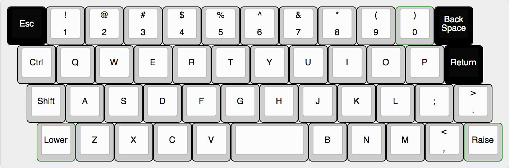
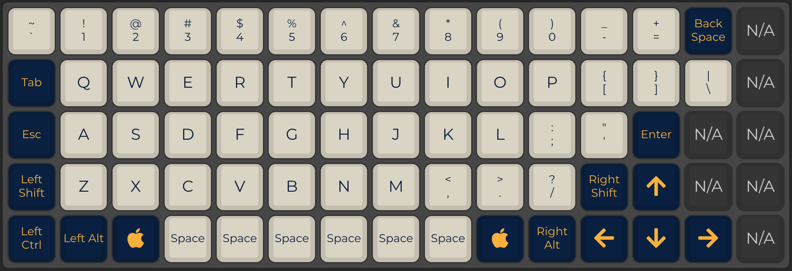

| Staggered | Ortholinear | |||
|---|---|---|---|---|
|  |  | |||
| Why this discussion | |
|---|---|
| Why is imporant? | What should consider? |
|
A keyboard is one of the primary input devices used with a
computer. |
There are many factors to consider when choosing a keyboard, such
as the size, durability, and software support and layout. SizeThe size of the keyboard refers to the number of keys and additional features like a numeric keypad, media keys, and more. DurabilityThe durability of the keyboard refers to how long it will last before the keys stop working or the keyboard breaks, ther are many options Software supportThe software support of the keyboard refers to the ability to customize the keyboard, most common being RGB lighting and macro keys. LayoutThe layout of the keyboard refers to the way the keys are arranged. Is the most important factor to consider when buying a keyboard, because it will determine how comfortable you are while typing. |
| What it is? | A staggered keyboard is typical for many keyboards, including your built-in laptop keyboard. It comes from the design of the vintage typewriter wherein each key must avoid bumping into one another for smooth registration. |
|---|---|
| PROS | CONS |
|
|
| What it is? | An ortholinear keyboard is a keyboard that aligns in a columnar manner. This means that the keys are in perfect rows, up and down and left to right. This layout minimizes finger movement from key to key and is ideal for professional typists who endure long hours of practice. |
|---|---|
| PROS | CONS |
|
|